AI 시대의 ERP 혁신은
엑셀에서 시작된다
회사의 실제 업무는 어디에 기록되어 있을까. 코스맥스의 현업 전문가들이 자기 업무를 소프트웨어로 만들기 시작하면서, ERP와 사람 사이에 숨겨져 있던 지식이 드러나고 있다.
ABSTRACT초록
이 대담은 전통 기업의 AI 전환을 ERP 교체보다 넓은 문제로 바라본다. 회계와 거래를 기록하는 핵심 시스템 바깥에서, 현업의 엑셀·전화·메신저가 실제 업무를 연결해 왔다는 진단이다. 코스맥스에서는 AI 코딩 도구를 배운 도메인 전문가들이 이 중간 업무를 직접 소프트웨어로 옮겼고, 그 과정에서 데이터와 업무 문서가 축적되었다고 설명한다. 핵심 질문은 세 가지다. 누가 업무를 정의하는가, 무엇을 신뢰할 수 있는 기록으로 남기는가, 자동화 이후 사람은 어떤 일을 맡는가.
먼저 읽는 세 가지 발견
KEY FINDINGSAI 보급보다 업무 배치가 중요하다
개인에게 도구를 지급하는 것만으로는 전사 생산성이 오르지 않는다. 부서 사이의 정보 전달과 의사결정 흐름까지 다시 설계해야 한다.
현업의 암묵지가 개발의 출발점이다
엑셀 속 계산과 예외 처리를 가장 잘 아는 사람이 직접 시스템을 만들면서, AI 전환이 업무의 디지털화를 함께 끌고 간다.
빨리 만드는 능력에는 운영 책임이 따른다
자체 개발은 비용과 대응 속도를 바꿀 수 있다. 동시에 회계 통제, 데이터 보호, 유지보수에는 숙련 엔지니어의 역할이 필요하다.
좋은 도구를 보급했는데,
왜 회사는 그대로일까
직원에게 고가의 AI 요금제를 제공하면 회사 전체가 더 빠르게 움직일까. 노정석은 증기기관에서 전기모터로 넘어가던 공장의 비유로 이 질문을 연다. 커다란 증기기관이 있던 자리에 전기모터를 넣는 것만으로는 생산 방식이 달라지지 않았다. 작은 모터가 개별 기계에 들어가고 공장 배치까지 바뀌어야 새로운 기술의 이점이 드러났다는 설명이다.
대담이 제안하는 관점은 개인의 작업 속도와 조직의 처리 속도를 구분하는 것이다. 문서를 더 빨리 만들어도 다음 부서가 전화로 내용을 다시 확인하고, 누군가 엑셀을 맞춘 뒤 ERP에 입력해야 한다면 전체 흐름은 여전히 느릴 수 있다.
여기서 등장하는 것이 ‘판교 IT’와 ‘강북 IT’라는 대비다. 전자가 소프트웨어 제품과 엔지니어를 중심으로 돌아가는 세계라면, 후자는 SAP·Oracle·IBM·대형 SI와 컨설팅사가 전통 기업의 업무 시스템을 구축하는 세계다. 대담은 AI가 이 두 세계 사이의 인력과 개발 역량의 간격을 바꾸기 시작했다고 본다.
전기모터를 들여놓는 데서 멈추지 않고,
공장의 배치를 다시 설계해야 한다.
관련 장면 · 03:03 생산성의 비유 · 04:57 두 IT 생태계
업무를 설명하던 사람이
업무 시스템을 만들기 시작했다
전환의 출발점은 2025년 가을의 자원자 대상 Claude Code 교육이었다. 핵심 업무를 맡던 직원들이 참여했고, 교육 이후 각 부서는 필요한 시스템을 외부에 발주하거나 구매하는 대신 직접 만들기 시작했다고 한다. 대담 시점에는 GitHub에 코드를 커밋하는 현업 직원이 100명 가까이 되었다. 대부분 최근에 처음 개발을 접한 비엔지니어 출신이라는 설명이다.
눈여겨볼 변화는 코드의 양보다 업무 지식이 남는 방식이다. 기존에는 엑셀에서 계산하고 최종 값만 ERP로 보냈다면, 소프트웨어로 옮긴 뒤에는 중간 단계와 판단 규칙도 데이터와 문서로 남을 수 있다. 출연자들은 회사가 어떻게 돌아가는지를 정리한 문서가 요약본 약 1,200쪽, 전체 약 7,000쪽에 이르렀다고 말한다.
통상적으로는 디지털 전환(DX)을 먼저 마치고 AI 전환(AX)으로 나아가는 순서를 떠올린다. 이 사례에서는 개별 현업 전문가가 AI로 문제를 해결하면서, 그에 필요한 업무 정의와 데이터 정리가 함께 진행되었다. ‘AX가 DX를 끌고 간다’는 관찰이다.
| 관찰 지점 | 기존 방식 | 전환 과정의 변화 |
|---|---|---|
| 업무 정의 | 선배의 설명과 개인 파일에 의존 | 현업이 AI와 함께 규칙과 예외를 명시 |
| 시스템 변경 | 외부 발주·솔루션 구매로 요구 전달 | 도메인 전문가가 직접 만들고 수정 |
| 데이터 축적 | 중간 계산은 엑셀에, 최종 결과는 ERP에 | 중간 업무 단계도 사내 데이터로 축적 |
| 부서 간 조정 | 전화·메신저로 상태를 반복 확인 | 공유된 상태를 바탕으로 전달 업무 감소 |
한 예로 하루 300건의 Teams 메시지로 업무를 받던 형태가 여러 부서에서 사라지고 있다고 언급한다. 다만 해당 부서와 측정 방법은 공개하지 않았다. 이를 전사 생산성 개선율로 환산할 근거는 없지만, 반복적인 확인과 전달이 중요한 개선 대상이라는 점은 드러난다.
현업의 실행력과 엔지니어의 운영 역량
대담에는 바이브 코딩 과정에서 DB를 날린 사고도 등장한다. 출연자들은 안전장치를 설계 중이라고 설명하며, 도메인 전문가와 숙련 엔지니어를 어떻게 결합할지는 남은 과제로 제시한다. 업무를 아는 능력과 시스템을 안정적으로 운영하는 능력은 함께 필요하다.
관련 장면 · 26:29 현업 개발자 약 100명 · 30:03 AX와 문서화 · 59:13 커뮤니케이션 비용
70억 원이라는 숫자보다
먼저 봐야 할 것은 비용의 종류다
고종옥 부문장은 7~8개월의 작업 결과를 비용으로 설명한다. 이때 구매하지 않게 된 투자, 향후 줄일 유지보수비, 이미 절감했다고 밝힌 비용은 서로 다른 범주다. 세 숫자를 하나의 확정 성과로 더해 읽어서는 안 된다.
향후 2~3년간 도입 예정이던 솔루션을 구매하지 않아도 되었다는 설명
연 약 20억 원의 유지보수비를 대상으로 제시한 절감 전망
영상에서 ‘올해 이미 절감했다’고 밝힌 금액
모두 출연자 발언 기준. ‘올해’와 ‘내년’은 제공 노트의 2026년 녹화 시점에 따른 표현이다. 산정 기준, 항목 간 중복 여부, 내부 개발·운영 비용을 포함한 순효과는 확인되지 않았다.
이 수치들이 보여주는 방향은 외부 솔루션과 SI 구매의 일부가 내부 개발 역량으로 이동한다는 것이다. 노정석은 이를 소프트웨어 가격을 낮추는 압력으로 읽고, 고종옥 부문장은 소프트웨어 인력이 제조 기업 안으로 들어와 본업의 경쟁력을 높이는 변화로 해석한다.
같은 맥락에서 SI 가격 구조도 질문을 받는다. AI 덕분에 작업 기간이 짧아졌는데 발주 가격이 그대로라면, 발주사는 내재화와 외주의 비용을 새롭게 비교하게 된다. 대담은 AI 활용을 전제로 한 가격 인하와 소스코드 납품 요구가 커지고 있다고 설명한다.
관련 장면 · 51:58 비용 효과 · 1:16:02 SI 가격 구조
핵심 ERP가 지키는 것은
숫자보다 숫자가 만들어지는 절차다
자체 소프트웨어가 늘어난다고 해서 ERP의 모든 기능이 곧바로 사라지는 것은 아니다. 대담은 FI(재무회계)와 CO(관리회계)를 중심으로, 거래가 정해진 규칙을 따라 입력되고 수정되는 구조를 강조한다. 월 마감 후 원가를 직접 바꾸는 대신 역분개 절차를 거치고, 영업·생산·재무의 기록이 서로 연결되는 식이다.
고종옥 부문장은 이런 통제가 재무 조직과 회계법인이 익숙한 ERP 데이터를 신뢰하는 이유라고 설명한다. 여기서 읽어야 할 핵심은 제품 이름 자체보다 변경 권한, 수정 이력, 마감과 취소 절차를 검증할 수 있어야 한다는 점이다. 자체 시스템에도 이 신뢰를 입증할 책임이 생긴다.
SAP의 커스터마이징을 담당하는 ABAP 인력과 모듈별 전문성은 또 다른 경계다. 대담에서는 FI·CO·PP(생산) 사이의 강한 역할 구분과 특정 담당자에 대한 의존을 지적한다. 업무 변화가 여러 모듈에 걸치면 기술만큼 업무 이해와 조율이 필요해진다.
| 영역 | 개선의 초점 | 함께 확인할 조건 |
|---|---|---|
| 현업 업무 | 중간 계산, 예외 처리, 부서 간 전달 | 업무 정의와 데이터 갱신 책임 |
| 연결·운영 | 공유 상태, 시스템 연동, 반복 입력 감소 | 접근 권한, 복구, 변경 검토와 운영 담당자 |
| 회계·거래 | 신뢰할 수 있는 원장과 거래 기록 | 마감, 역분개, 이력, 감사 가능성 |
ERPNext가 던지는 질문
대담 후반에는 오픈소스 ERPNext가 등장한다. 고종옥 부문장은 AS-IS 분석에서 정리한 업무 프로세스별 안전장치를 시험했을 때 70~80%가 동작했다고 말한다. 한국 세법 반영과 펌뱅킹 연동을 남은 공백으로 보고, 이를 해결하는 경량 ERP 서비스의 가능성을 제시한다.
다만 시험 항목, 버전, 구성, 판정 기준이 공개되지 않았으므로 이 비율을 제품의 전체 완성도나 도입 준비 수준으로 읽을 수는 없다. 두 공백만 해결하면 모든 기업에 적용할 수 있다는 결론 역시 이 자료로는 확인되지 않는다.
코스맥스는 법인 규모에 따라 SAP·더존·기타 ERP 세 종류를 병행하며, 차세대 SAP 전환도 준비 중이라고 밝혔다. 실제 변화의 모습은 현업 소프트웨어의 확장과 핵심 ERP 전환이 함께 진행되는 과정에 가깝다.
관련 장면 · 35:09 데이터 신뢰 · 39:27 모듈과 ABAP · 1:03:00 ERPNext
자기 일을 바꾼 다음,
어떤 문제를 맡을 것인가
고종옥 부문장이 든 예는 국내 영업 조직이다. 영업 담당자는 고객만 응대하지 않는다. 품질·생산·자재·협력사·연구소를 연결하고, 제품과 납기의 예외를 전화로 조정한다. 고객과 매출이 늘수록 이 연결 업무의 복잡도도 커진다.
대담은 데이터와 프로세스가 정의되는 만큼 이런 운영 업무가 자동화되고, 담당자는 고객 문제 해결과 신규 고객 발굴에 집중하게 될 것으로 전망한다. 6개월마다 큰 변화가 생기고 보수적으로 봐도 2년 안에 조직이 크게 달라질 것이라는 예상도 나온다. 이는 확인된 결과가 아니라 출연자의 미래 전망이다.
사람의 이동도 변화의 한 축이다. 고종옥 부문장은 AX 혁신팀에서 10명 이상 채용을 준비하며 약 100장의 이력서를 검토했고, 지원자 수준이 높아졌다고 설명한다. 노정석은 기술 기업의 채용 둔화가 전통 제조업의 엔지니어 확보 기회로 이어지고 있다고 해석한다. 한 기업의 채용 경험으로 노동시장 전체를 단정할 수는 없지만, 현업 전문가와 엔지니어가 만나는 새로운 접점을 보여준다.
내 일을 먼저 뒤엎고,
“그럼 나는 무엇을 해야 하나”를 묻는다.
대담의 결론은 자기 업무를 자동화한 뒤 다음 문제를 찾는 실행 의지에 무게를 둔다. 분별력, 취향, 사람 사이의 신뢰도 인간에게 남는 역량으로 꼽는다. 동시에 경영진은 무엇이 필요한지, 어떤 인재가 필요한지, 어떤 리스크를 감수할지를 이해해야 한다고 강조한다.
조직 차원의 과제로 옮기면, 자동화로 확보한 시간을 어떤 역할과 책임으로 연결할지가 중요해진다. 개인의 의지만 요구하기보다 새로운 문제를 맡을 기회와 이를 뒷받침할 운영 체계를 함께 설계해야 한다는 것이 이 사례에서 도출할 수 있는 시사점이다.
관련 장면 · 1:05:42 경영진과 신뢰 · 1:10:42 영업 조직의 변화 · 1:16:02 다음 역할
우리 조직에서는
어디서 시작할 수 있을까
이 사례를 다른 제조 기업이나 연구실·기관에 적용한다면, 첫 관찰 대상은 현업이 매일 사용하는 엑셀과 반복적인 확인 업무가 될 수 있다. 연구 행정이나 과제 관리에서도 중간 계산, 예외 승인, 일정 조정이 개인 파일과 구전에 남아 있는지 살펴볼 만하다.
아래 항목은 영상에 제시된 실행 지침이 아니라, 사례를 바탕으로 정리한 검토 질문이다.
- 실제 업무를 찾았는가? 공식 절차와 별개로 어떤 엑셀·전화·메신저가 일을 연결하는지 확인한다.
- 예외를 설명할 사람이 있는가? 정상 흐름뿐 아니라 예외와 판단 기준을 아는 현업 전문가를 찾는다.
- 만든 뒤의 책임이 정해졌는가? 데이터 권한, 변경 검토, 백업·복구, 유지보수 담당자를 함께 정한다.
- 성과를 구분해 측정하는가? 투자 회피, 실제 지출 감소, 처리 시간, 내부 개발·운영 비용을 나누어 기록한다.
- 다음 역할이 준비되어 있는가? 줄어든 전달·조정 업무의 시간을 어떤 고객 문제나 연구 지원에 쓸지 구체화한다.
가장 가까운 출발점은 이미 현업의 책상 위에 있다. 매일 열리는 엑셀 한 장에서, 조직이 어떻게 일하는지 다시 읽어보자.
대담을 따라가는 22개 장면
제공 노트에 따르면 영상은 두 출연자를 한 화면에 담은 고정 투샷으로 진행된다. 아래 이미지는 각 챕터의 약 70% 지점에서 추출한 프레임이다. 화면 속 자료로 주장을 입증하는 이미지가 아니라, 대화의 위치를 찾아가기 위한 색인이다. 시간 링크를 누르면 원본 영상의 해당 시점으로 이동한다.
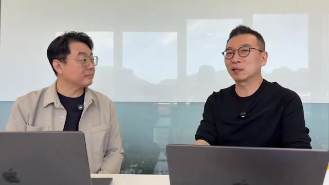
AI 네이티브 ERP라는 질문
노정석은 코스맥스 디지털 자문으로 전사 AI 전환을 맡고 있다고 소개한다. 고종옥 부문장은 AI 네이티브 ERP에 관한 대화를 예고한다.
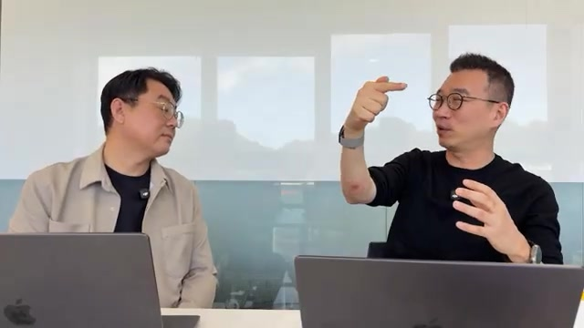
증기기관에서 전기모터로
a16z 팟캐스트를 인용하며 지식 노동자·코더 규모와 AI 이용 양상을 언급한다. 핵심은 도구 지급을 넘어 업무 배치를 바꿔야 한다는 비유다. 인용 통계는 별도로 검증되지 않았다.
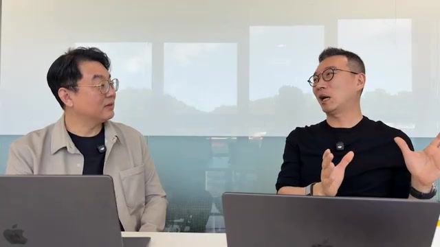
판교 IT가 몰랐던 강북 IT
SAP·Salesforce·Oracle·Microsoft, IBM과 대형 SI가 중심이 되는 전통 기업의 IT 생태계를 이야기한다. ‘강북 IT’는 이 세계를 설명하는 대담 속 표현이다.
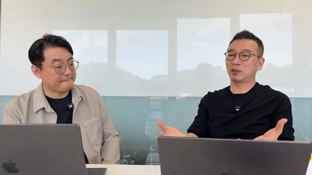
ERP 업그레이드에서 시작된 과제
2025년 가을 무렵의 업그레이드 필요성과 SAP PCE 전환 맥락을 설명한다. ERP를 전 부서의 자원과 업무를 연결하는 회사의 backbone으로 정의한다.
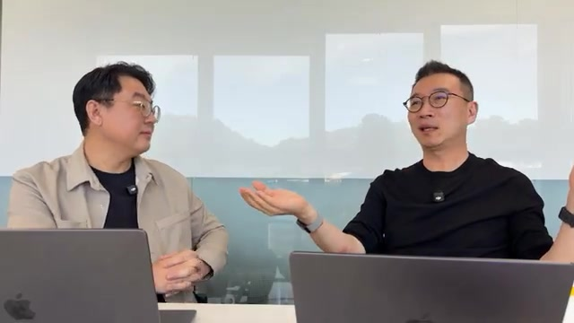
수백억 원 프로젝트의 언어
약 10년마다 반복되는 대규모 ERP 프로젝트를 다룬다. 노정석의 SAP·ABAP 강의 학습 경험을 거쳐, FI 중심의 업무 구조라는 진단으로 이어진다.
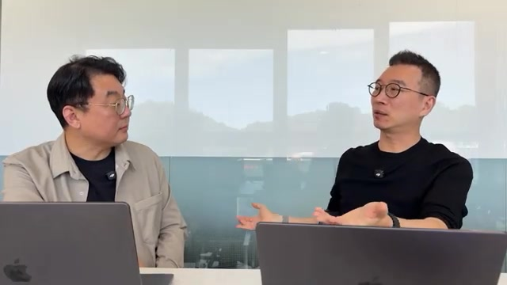
10년 주기 재건축의 비용
업무 변화가 누적된 뒤 한 번에 재구축하는 방식과 SI 비용을 짚는다. 작은 업무까지 외부 SaaS로 구매하던 공식이 자체 개발 확산으로 흔들릴 수 있다고 본다.
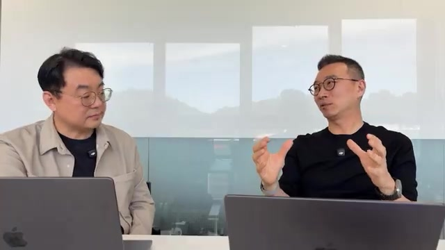
아기 몸통에 어른 손발
2016년 도입한 SAP와 성장한 조직 사이의 간격을 설명한다. 공장을 멈출 수 없는 상황에서 주변 시스템이 덧붙고, 기술 부채와 벤더 의존이 늘어난다는 진단이다.
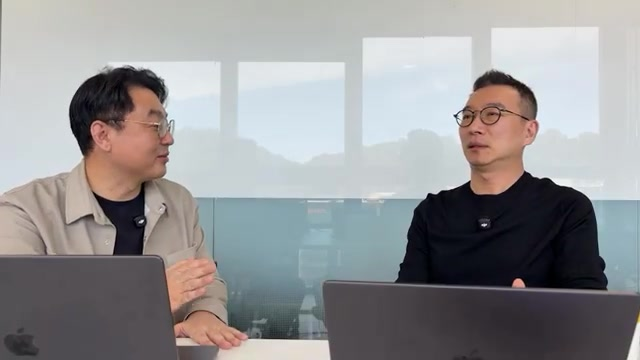
AI가 먼저 돕는 일, 현재 업무의 기록
경영진의 기대와 현장 현실 사이의 간격을 짚는다. AI가 직접적으로 도울 수 있는 영역으로, 구전과 개인 파일에 남은 기존 업무의 문서화를 꼽는다.
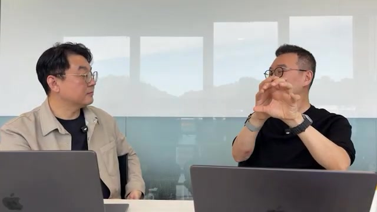
가장 유능한 직원의 엑셀
회사의 고유한 업무 방식은 현업의 엑셀·문서·PPT에 쌓여 있다. 진화하는 조직이 고정된 시스템에 적응하면서, 실제 업무와 최종 기록이 갈라졌다는 설명이다.
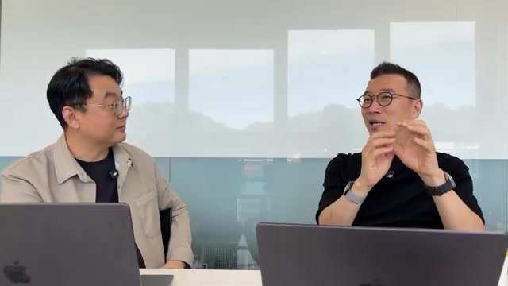
GitHub에 커밋하는 현업 약 100명
자원자 대상 교육을 계기로 부서들이 직접 시스템을 만들기 시작했다. 노정석은 도구 학습과 함께 오너십과 기업가정신이 확산된 점을 강조한다.
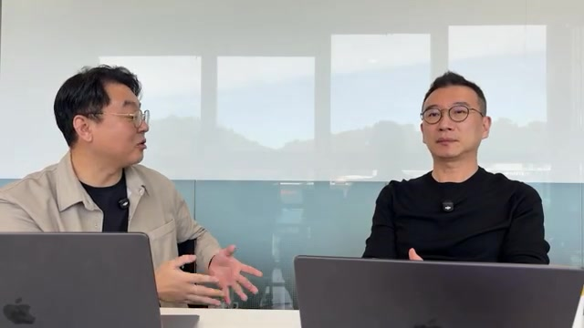
AX가 끌고 가는 디지털화
엑셀을 소프트웨어로 옮기며 중간 업무 데이터가 남기 시작했다. 회사의 업무 문서는 요약 약 1,200쪽, 전체 약 7,000쪽에 이르렀다고 밝힌다.
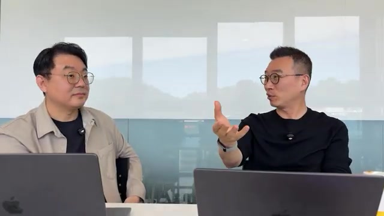
숫자를 믿게 만드는 절차
규칙에 따른 입력과 수정, 월 마감과 역분개, 모듈 간 연결을 설명한다. 익숙한 ERP의 통제 구조와 자체 시스템이 입증해야 할 신뢰의 문제를 다룬다.
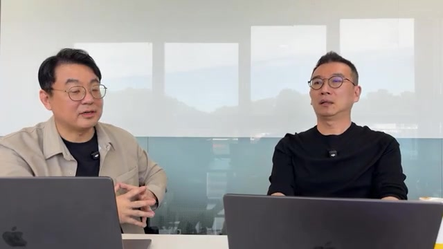
모듈 사이를 메우는 ABAP
업종별 패키지의 빈틈을 커스터마이징으로 채우는 구조다. FI·CO·PP별 전문성의 경계와 희소한 담당 인력에 대한 의존이 변화의 어려움으로 제시된다.
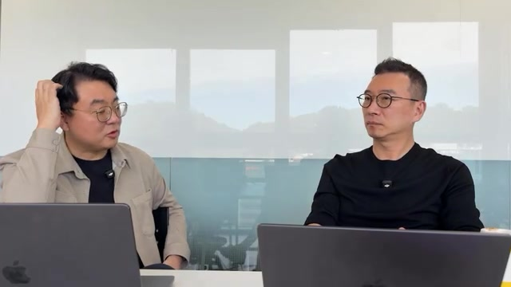
엔지니어의 공백 위에 세워진 생태계
컨설팅 파트너, 인증 인력, 모듈별 커뮤니티의 역할을 다룬다. 전통 기업이 숙련 엔지니어를 확보하기 어려웠던 환경이 벤더 생태계의 영향력을 키웠다는 해석이다.
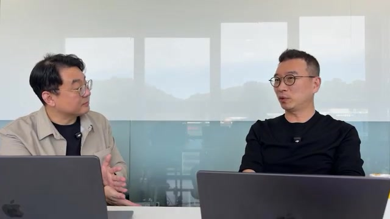
제조업으로 향하는 개발 역량
10명 이상 채용 준비와 약 100장의 이력서 검토 경험을 공유한다. DB 삭제 사고와 안전장치 설계도 언급하며, 차세대 SAP 전환은 계속 준비 중이라고 밝힌다.
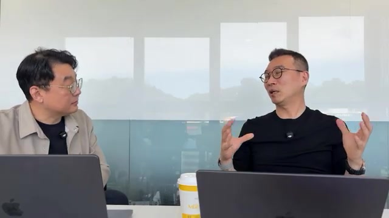
투자 회피와 비용 절감의 구분
약 70억 원의 솔루션 투자 회피, 연 20억 원 유지보수비의 70% 이상 절감 전망, 올해 10억 원 절감이 제시된다. 모두 산정 근거가 공개되지 않은 발언 수치다.
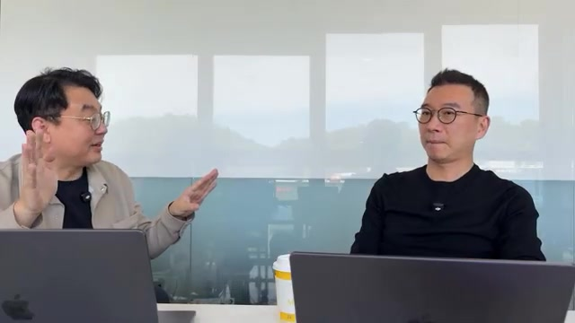
실시간 정보는 왜 ERP 밖에 있나
수많은 자재와 완성품, 7~8시간의 배치 처리, JIT 생산의 요구가 맞물린다. 현업은 엑셀을 맞춰 일을 진행하고 결과를 ERP에 기록한다고 설명한다.
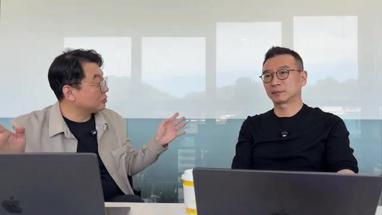
하루 300건의 메시지가 뜻하는 것
반복적인 메시지로 업무를 전달하던 방식이 사라지는 사례를 언급한다. 공유된 상태를 함께 보는 시스템이 줄일 수 있는 조정 비용에 주목한다.
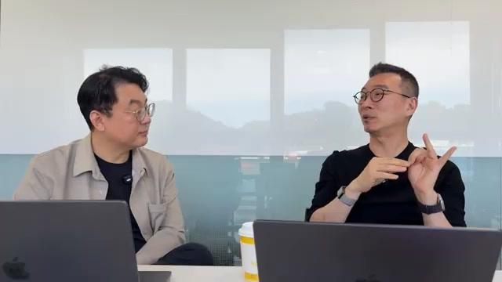
ERPNext와 새로운 진입 기회
내부 안전장치 테스트의 70~80%가 동작했다는 설명과 함께 한국 세법·펌뱅킹 연동을 과제로 꼽는다. FDE 기업에도 현장 암묵지의 이해가 필요하다고 본다.
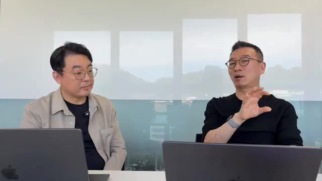
무엇을 맡기고, 어떤 위험을 질 것인가
경영진이 필요 기능·인재·리스크를 이해해야 전환이 지속된다고 강조한다. 분별력, 취향, 실행 의지와 사람 사이의 신뢰를 인간의 역량으로 꼽는다.
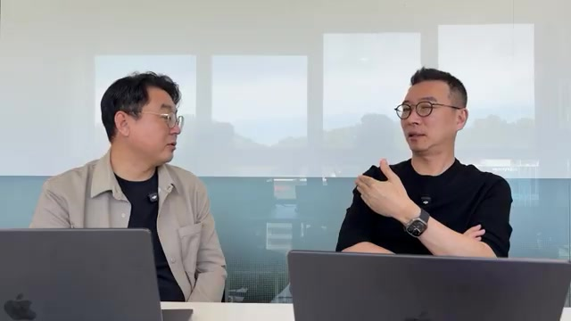
조정 업무에서 고객 문제 해결로
여러 부서를 연결하는 영업 업무가 자동화되면 고객 문제 해결과 신규 고객 발굴의 비중이 커질 것으로 본다. 6개월 단위의 큰 변화와 2년 내 재편은 출연자의 전망이다.
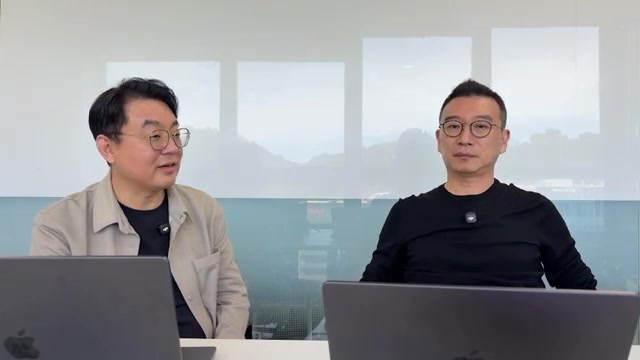
자기 일을 바꾸고 다음 일을 묻는 사람
효율화 이후 더 큰 문제를 찾는 태도를 강조한다. SI 가격과 내재화의 경쟁을 짚으며 마무리하고, 다음 회차에서 구체적인 업무 사례를 다루겠다고 예고한다.
출처와 해석의 한계
이 리포트는 한 제조 기업의 전환 경험에 관한 대담을 구조화한 사례 분석이다. 별도의 기업 실사, 제품 성능 평가, 회계·법률 적합성 검증을 수행한 보고서는 아니다.
원본 자료
- 채널
- AI Frontier Korea (노정석)
- 출연
- 노정석 — B Factory 대표, 코스맥스 디지털 자문
고종옥 — 코스맥스 PI 혁신 부문장 - 편집
- 김유진
- 게시일
- 2026년 10월 5일 · 제공 메타데이터 기준
- 녹화
- 2026년 10월 3일 토요일 오전, 판교 코스맥스 사무실 · 도입부 발언 기준
- 길이
- 1시간 17분 31초 · 4,651초
- 노트 근거
- 메타데이터, 설명란, 22개 챕터, 채널 제공 영어 수동 자막(en-US) 1,155개 큐·약 6.9만 자
- 이미지
- 제공된 영상 추출 프레임 22개. 각 챕터의 약 70% 지점이며 영상 화면에는 슬라이드·화면 공유·자막 그래픽이 없다는 노트의 설명을 따름.
해석할 때 남겨둘 네 가지 경계
- 성과 산정의 불확실성. 비용 절감, 문서 분량, 참여 인원, ERPNext 테스트 비율은 출연자 발언이다. 산정 기준과 검증 방법이 공개되지 않아 독립적인 성과 평가나 일반화에는 한계가 있다.
- 공개 범위의 제약. 출연자들은 민감한 내부 사안 때문에 발언을 조절하고 있다고 밝혔다. 부서명, 구체적인 업무 사례, 실제 시스템 구조가 생략되어 구현 방식과 재현 조건을 충분히 확인할 수 없다.
- 사례와 이해관계. 노정석은 코스맥스의 디지털 자문이며 고종옥은 내부 실행 책임자다. 이들의 경험과 평가는 중요한 현장 자료지만, 다양한 업종이나 다른 기업의 결과를 대표하지 않는다.
- 언어와 시각 근거. 노트에 따르면 한국어 자막은 수동·자동 모두 제공되지 않았다. 한국어 인용은 영어 자막의 재번역이며, 정지 프레임은 대화 위치를 보여줄 뿐 수치나 시스템 동작을 시각적으로 검증하지 않는다.